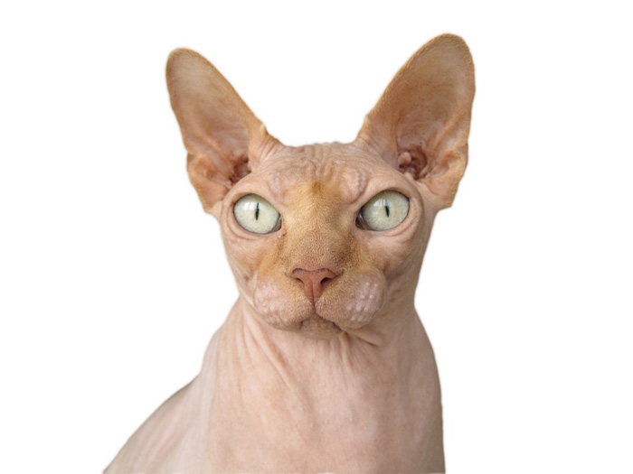

><!DOCTYPE html>
<html lang="en">
<head>
    <meta charset="UTF-8">
    <meta http-equiv="X-UA-Compatible" content="IE=edge">
    <meta name="viewport" content="width=device-width, initial-scale=1.0">
    <title>Page</title>
</head>


<body><h1>Imagen con enlace</h1>


<a href="../HTML/prueba2.html">
    


<h1>Peso: pesa entre 3,5 y 7 kg, el macho suele pesar más que la hembra.
    Cabeza: mas larga que ancha, triangular o en forma de cuña.
    Hocico: tiene forma cuadrada.
    Cuerpo: generalmente tiene tamaño mediano o en algunos casos grande.
    Ojos: grandes, redondos, definidos y ubicados encima de los pómulos.
    Nariz:  respingada y algunos ejemplares la tienen casi recta.
    Altura: entre 20 y 25 cm.</h1>
<b1> </b1>
 

 
  <footer> contacto</footer>
  
      


</body>
</html>